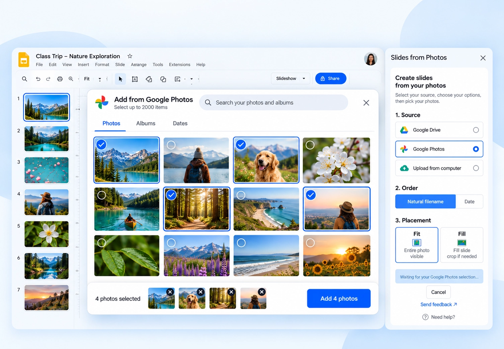
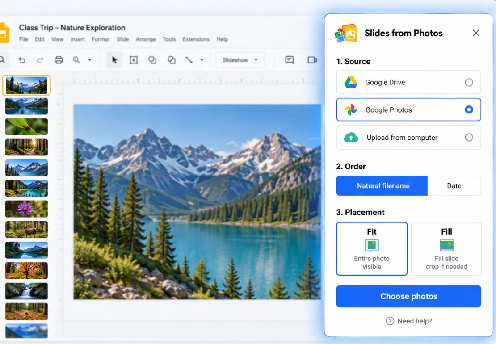
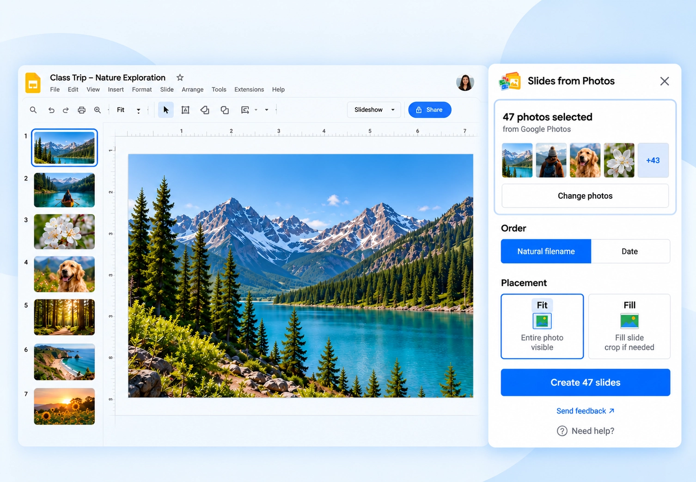
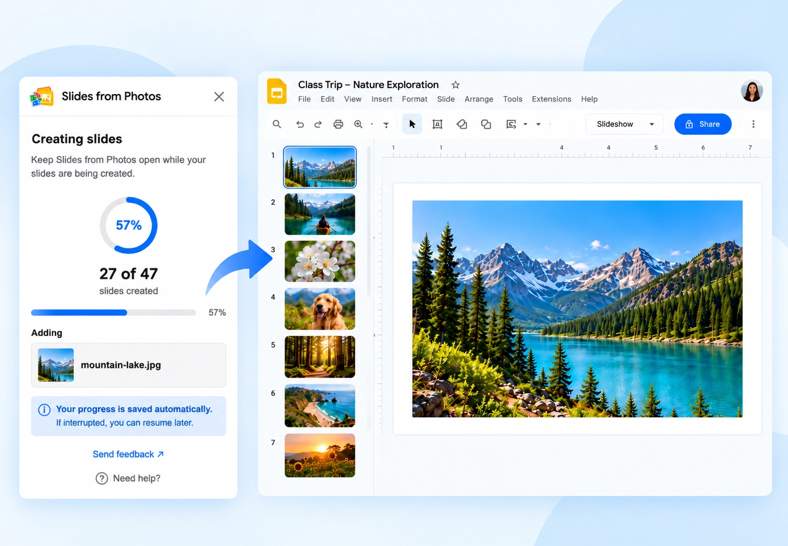
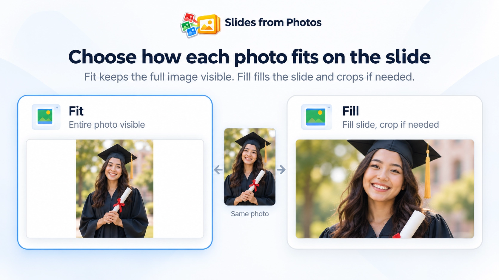

01
Select Google Photos

Choose Google Photos as the source and select the photos you want to use.
Slides from Photos guide
Turn selected Google Photos into an editable Google Slides presentation, with one selected photo becoming one slide.
Slides from Photos is a Google Slides add-on from DZS Labs for selecting a Google Photos batch, reviewing its order, choosing Fit or Fill, and creating the slides in one workflow.

To turn selected Google Photos into separate Google Slides, open a presentation and launch Slides from Photos. Choose Google Photos, select the pictures you want, review the selected batch and order, choose Fit or Fill, and create the slides. Each selected photo becomes its own slide.
Google Photos selection is explicit: finding photos through search does not by itself select every matching photo or grant access to an entire library.
01

Choose Google Photos as the source and select the photos you want to use.
02

Review the selected photos and their order before creating slides.
03

Create one Google Slide for each selected photo.
If the photos you want are in a Google Photos album, you can use search in the Google Photos Picker to find photos associated with that album title, then select the photos you want to use.
Google Photos does not necessarily show albums as browsable album cards in this selection experience. Searching by album title helps you find relevant photos, but you still explicitly select the photos for the Slides from Photos batch. This is not an automatic full-album import feature.
Each selected Google Photos photo becomes one slide. Fit keeps the full photo visible and may leave unused space.
Fill fills the slide while preserving proportions and may crop the edges.
For the broader multi-source workflow, see the general one-photo-per-slide Google Slides guide.

Slides from Photos shows progress while the selected Google Photos batch is processed. If processing is interrupted, supported jobs can resume, and the final result reports completed, skipped, or failed items where applicable.
Selection behavior can depend on the source and the current Google Photos selection experience, so this page does not promise a universal batch size.
Google Photos is the photo library and selection source. Google Slides is the editable presentation where the result is created.
Native Google Slides can insert individual images from Drive & Photos. Slides from Photos adds the batch workflow for turning selected photos into separate slides, with one selected photo per slide.
Yes. Select the Google Photos photos you want, then Slides from Photos creates one Google Slide for each selected photo.
You can search for photos associated with an album title in the Google Photos Picker and explicitly select the photos you want. Searching an album title does not automatically import the whole album.
Yes. The core workflow creates one slide for each selected photo.
No. Google Photos is a supported source, so you can select photos there without first downloading them to your computer.
Yes. Review the selected batch and choose its order before creating the slides.
Slides from Photos is designed for larger selections and includes progress and supported resume behavior. Exact selection behavior can vary by source, so no universal numeric capacity is promised.
Choose the photos you want, create one slide per photo, and continue editing normally in Google Slides.
Install Slides from Photos